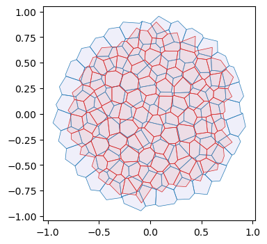

from typing import Tuple
import dataclasses
import copy
import numpy as np
import matplotlib.pyplot as plt
import jax
import jax.numpy as jnp
import diffrax
import lineax
from jaxtyping import Float, Bool, Int
from enum import IntEnumArea-perimeter self-propelled Voronoi model
After the toy example of notebook 05, let’s implement a slightly more complicated model, the self-propelled Voronoi area-perimeter Voronoi (VAP) model of Bi et al., 2016. This 2D model comprises most of the ingredients we will see in more general tissue mechanics simulations, from a coding perspective.
In brief, in the VAP, cells are modeled as the Voronoi tesselation for a series of centroids \(\mathbf{v}_i\) (our triangulation vertices). Their overdamped dynamics comprises two terms: self-propulsion and relaxation of an elastic energy: \[\partial_t \mathbf{v}_i = -\nabla_{\mathbf{v}_i} E_{AP} + v_0 \hat{\mathbf{n}}_i\] For each cell \(i\), \(\hat{\mathbf{n}}_i\) is a unit vector (so we will represent it by an angle \(\theta_i\)) that determines the direction of motion. Units of time are chosen so that the coefficient of \(\nabla E_{AP}\) is \(1\). The energy is defined in terms of the Voronoi area \(a_i\) and Voronoi perimeter \(p_i\) of each cell: \[E_{AP} = \sum_i k_a(a_i-a_0)^2 + k_p(p_i-p_0)^2 \] where \(k_a, k_p\) are elastic constants, and \(a_0, p_0\) are the target area and perimeter. They define the “shape index” \(s_0= p_0/\sqrt{a_0}\). The key physics is that above a critical shape index \(s_0^*\), the model has a degenerate set of ground states, since for a large \(p_0\), there are many polygons with the given target area and perimeter (think floppy balloon).
The orientation \(\theta_i\) of each cell is also dynamic. It undergoes rotational diffusion: \[d\theta_i = D_\theta dW_{t, i} \] where \(dW_{t,i}\) is Brownian motion, independent for each cell \(i\), and \(D_\theta\) is the diffusion constant.
Numerics
The cell array connectivity will be represented by a HeMesh (see notebook 01). The geometry is fully described by the triangulation vertex positions, the Voronoi cell centroids. We also need a scalar vertex attribute for the angle \(\theta_i\). To calculate the energy \(E_{AP}\), we obtain Voronoi area and perimeter using the linops module. Boundary cells can be handled by “mirroring”, i.e., all corners count twice when computing the area/perimeter. Given the energy, JAX autodiff gives us the gradients. To time-evolve the mesh geometry, we can use diffrax, like in notebook 05. diffrax can also deal with SDEs, like the Langevin equation for cell angles.
Note This notebook is an example, and not meant to be numerically efficient!
jax.config.update("jax_enable_x64", True)
jax.config.update("jax_debug_nans", True)
jax.config.update("jax_log_compiles", False)
jax.config.update("jax_disable_jit", False)from triangulax import trigonometry as trig
from triangulax.triangular import TriMesh
from triangulax import mesh as msh
from triangulax.mesh import HeMesh, GeomMesh
from triangulax import linopsfrom importlib import reload
#reload(msh)
#reload(trig)Read in test data
mesh = TriMesh.read_obj("test_meshes/disk.obj")
hemesh = HeMesh.from_triangles(mesh.vertices.shape[0], mesh.faces)
geommesh = GeomMesh(*hemesh.n_items, vertices=mesh.vertices)
geommesh = msh.set_voronoi_face_positions(geommesh, hemesh)
hemesh, geommeshWarning: readOBJ() ignored non-comment line 3:
o flat_tri_ecmc(HeMesh(N_V=131, N_HE=708, N_F=224), GeomMesh(D=2,N_V=131, N_HE=708, N_F=224))fig, ax = plt.subplots(figsize=(4, 4))
ax.add_collection(msh.cellplot(hemesh, geommesh.face_positions,
cell_colors=np.array([0.7, 0.7, 0.9, 0.4]),
mpl_polygon_kwargs={"lw": 0.5, "ec": "k"}))
ax.set_aspect("equal")
ax.autoscale_view();
Voronoi geometry and area-perimeter energy
@jax.jit
def energy_ap(geommesh: GeomMesh, hemesh: HeMesh, a0: float, p0: float,
k_a: float = 1.0, k_p: float = 1.0, k_penalty: float=10) -> Float[jax.Array, ""]:
"""Area-perimeter energy for Voronoi cells.
Adds small penalty for triangles with negative area.
"""
cell_areas = linops.get_cell_areas(geommesh.vertices, hemesh)
cell_perimeters = linops.get_cell_perimeters(geommesh.vertices, hemesh)
tri_areas = linops.get_triangle_areas(geommesh.vertices, hemesh)
# add a factor 2x for boundary vertices to account for missing triangles
cell_areas = jnp.where(hemesh.is_bdry, 2.0 * cell_areas, cell_areas)
cell_perimeters = jnp.where(hemesh.is_bdry, 2.0 * cell_perimeters, cell_perimeters)
a_min = 0.25*(a0/2)
penality = jnp.where(tri_areas < a_min, k_a * (tri_areas-a_min)**2, 0.0).mean()
return k_a*jnp.mean((cell_areas-a0)**2) + k_p * jnp.mean((cell_perimeters-p0)**2) + k_penalty*penalitycell_areas, cell_perimeters = (linops.get_cell_areas(geommesh.vertices, hemesh),
linops.get_cell_perimeters(geommesh.vertices, hemesh))
a_mean, p_mean = (cell_areas[~hemesh.is_bdry].mean(), cell_perimeters[~hemesh.is_bdry].mean())
a_mean, p_mean, p_mean/np.sqrt(a_mean)(Array(0.02756258, dtype=float64),
Array(0.63463959, dtype=float64),
Array(3.82267399, dtype=float64))energy_ap(geommesh, hemesh, a0=a_mean, p0=3*jnp.sqrt(a_mean))Array(0.01891426, dtype=float64)Edge flips
After each timestep, we need to check if the Voronoi edge lengths are below some threshold (the edge lengths can be computed on the fly), and, if so, we need to carry out edge flips. See notebook 03. We need to ensure that we do not immidiately “re-flip” an edge. This can be done via “cool down” period (an edge flipped at step \(t\) cannot be flipped again for the next few steps).
@jax.jit
def apply_flips(geommesh: GeomMesh, hemesh: HeMesh, l_min_T1: float,
cooldown_counter: Int[jax.Array, " n_hes"], cooldown_steps: int,
) -> Tuple[HeMesh, Int[jax.Array, " n_hes"], Bool[jax.Array, " n_hes"],]:
"""Apply T1 edge flips with a per-edge cooldown."""
face_positions = msh.get_voronoi_face_positions(geommesh.vertices, hemesh)
edge_lengths = msh.get_signed_dual_he_length(geommesh.vertices, face_positions, hemesh)
to_flip = (edge_lengths < l_min_T1) & (cooldown_counter == 0)
hemesh_next = msh.flip_all(hemesh, to_flip)
cooldown_counter = jnp.where(to_flip, cooldown_steps, jnp.clip(cooldown_counter-1, 0))
return hemesh_next, cooldown_counter, to_flipEnergy relaxation (no self-propulsion)
We first only relax the area–perimeter energy. We also need to allow for topological modifications of the mesh (T1s/edge flips). At every timestep, we check if any dual cell edge has negative length and flip it. To ensure we don’t flip the same edge multiple times, let’s use a cooldown period.
# energy parameters
a0 = a_mean
s0 = 3
p0 = s0*jnp.sqrt(a0)
# numerical parameters
step_size = 0.02
n_steps = 10000
cooldown_steps = 5
l_min_T1 = 0.0# relax energy
@jax.jit
def relax_energy_step(geommesh: GeomMesh, hemesh: HeMesh,
a0: float, p0: float,
step_size: float = 0.01,
k_a: float = 1.0, k_p: float = 1.0) -> Tuple[GeomMesh, Float[jax.Array, ""]]:
loss, grad = jax.value_and_grad(energy_ap)(geommesh, hemesh, a0, p0, k_a, k_p)
updated_vertices = geommesh.vertices - step_size * grad.vertices
geommesh_updated = dataclasses.replace(geommesh, vertices=updated_vertices)
return geommesh_updated, loss
# package simulation time step into a function for jax.lax.scan
@jax.jit
def scan_fun(carry: Tuple[GeomMesh, HeMesh, Int[jax.Array, " n_steps"]], x: Float[jax.Array, " n_steps"]):
(geommesh_relaxed, hemesh_relaxed), cooldown_counter = carry
# step energy
geommesh_relaxed, loss = relax_energy_step(geommesh_relaxed, hemesh_relaxed, a0, p0, step_size=step_size)
# carry out T1s
hemesh_relaxed, cooldown_counter, to_flip = apply_flips(geommesh_relaxed, hemesh_relaxed, l_min_T1,
cooldown_counter, cooldown_steps)
# return updated carry and metrics
log = jnp.array([loss, to_flip.sum()])
return ((geommesh_relaxed, hemesh_relaxed), cooldown_counter), logcooldown_counter = jnp.zeros(hemesh.n_hes)
sim_steps = jnp.arange(n_steps)
init = ((geommesh, hemesh), cooldown_counter)
((geommesh_relaxed, hemesh_relaxed), _), logs = jax.lax.scan(scan_fun, init, sim_steps)
energy, flip_count = logs.Tfig = plt.figure(figsize=(4, 3))
plt.plot(energy[::int(n_steps/1000)])
plt.xlabel("step")
plt.ylabel("energy")
# add a twin y axis that shows the cummulative number of flips
ax2 = plt.gca().twinx()
ax2.plot(jnp.cumsum(flip_count)[::int(n_steps/1000)], color="orange")
ax2.set_ylabel("cumulative flips", color="orange")
ax2.set_ylim([0,flip_count.sum()+1])
geommesh_relaxed = msh.set_voronoi_face_positions(geommesh_relaxed, hemesh_relaxed)
fig, ax = plt.subplots(figsize=(4, 4))
ax.add_collection(msh.cellplot(hemesh, geommesh.face_positions,
cell_colors=np.array([0.7, 0.7, 0.9, 0.2]),
mpl_polygon_kwargs={"lw": 0.5, "ec": "tab:blue"}))
ax.add_collection(msh.cellplot(hemesh_relaxed, geommesh_relaxed.face_positions,
cell_colors=np.array([0.9, 0.6, 0.6, 0.2]),
mpl_polygon_kwargs={"lw": 0.5, "ec": "tab:red"}))
ax.set_aspect("equal")
ax.autoscale_view();
Overdamped dynamics with self-propulsion
Next, let’s add the self-propulsion term. We initialize the angles \(\theta_i\) at random. We can store the angles as an extra vertex_attrib in our geommesh, using the functionality of the GeomMesh dataclass. We already have an IntEnum which we can use as keys to the vertex_attrib dictionary, like described in notebook 01.
In addition to incorporating the self-propulusion term \(\partial_t \mathbf{v}_i = -\nabla_{\mathbf{v}_i} E_{AP} + v_0\hat{\mathbf{n}}_i\), we need to do (stochastic) time steps for the angle orientation. Let’s do that with diffrax’s SDE solver, like in this tutorial. Let’s also implement the “pattern” for simulation loops with jax.lax.scan Note that the simulation can diverge if the self-propulsion term is too strong, due to effects at the boundaries. A more carefull handling of the boundaries (adding T1s on the boundaries, or using periodic BCs) is beyond the scope of this notebook.
Random numbers in JAX
JAX takes a different approach to random numbers (and hence the noise in our SDE) than numpy. The random numbers that will be used are specified by a key and will thus be reproducible across simulations. In particular, random numbers are no impediment to auto-differentiation; they are “frozen” when taking automatic derivatives.
## for this model, the simulation state becomes quite complex. Let's define a dataclass to hold it.
@jax.tree_util.register_dataclass
@dataclasses.dataclass
class SimState:
geommesh: GeomMesh
hemesh: HeMesh
cooldown_counter: Int[jax.Array, " n_hes"]
tprev: Float[jax.Array, ""]
solver_state_sp: object
solver_state_sde: object
## we also define a dataclass to hold logging information
@jax.tree_util.register_dataclass
@dataclasses.dataclass
class Log:
geommesh: GeomMesh
hemesh: HeMesh
energy: Float[jax.Array, ""]
n_flips: Int[jax.Array, ""]# initialize orientations and store as a vertex attribute
class VertexAttribs(IntEnum):
SP_ORIENTATION = 1
key = jax.random.key(0)
theta0 = jax.random.uniform(key, shape=(hemesh.n_vertices,), minval=0.0, maxval=2*jnp.pi)
geommesh_sp = dataclasses.replace(geommesh,
vertex_attribs={VertexAttribs.SP_ORIENTATION: theta0})
hemesh_sp = copy.copy(hemesh)## set simulation parameters
# energy parameters
a0 = a_mean
s0 = 3
p0 = s0*jnp.sqrt(a0)
v0 = 0.005 # self-propulsion speed
ka = 1.0
kp = 1.0
# orientation dynamics parameters
diffusion_coeff_theta = 1.0
# timestepping parameters
step_size = 0.02
n_steps = 5000
cooldown_steps = 5
l_min_T1 = 0.0# check magnitude of the gradient forces vs the self-propulsion
grad0 = jax.grad(energy_ap)(geommesh_sp, hemesh, a0, p0, 1, 1).vertices
sp0 = v0*jnp.stack([jnp.cos(theta0), jnp.sin(theta0)], axis=-1)
jnp.linalg.norm(sp0, axis=-1).mean() / jnp.linalg.norm(grad0, axis=-1).mean()Array(1.5736791, dtype=float64)## define the ODE for vertex positions
@jax.jit
def ap_selfprop_vector_field(t: Float[jax.Array, ""],
y: GeomMesh,
args: Tuple[HeMesh, float, float, float, float, float]) -> GeomMesh:
"""RHS for overdamped area-perimeter dynamics with self-propulsion."""
hemesh, a0, p0, v0, k_a, k_p = args
theta = y.vertex_attribs[VertexAttribs.SP_ORIENTATION]
# combine energy gradient with self-propulsion
grad = jax.grad(energy_ap)(y, hemesh, a0, p0, k_a, k_p)
n_hat = jnp.stack([jnp.cos(theta), jnp.sin(theta)], axis=-1)
velocity = -grad.vertices + v0 * n_hat
# velocity = jnp.where(hemesh.is_bdry[:,None], 0, velocity)
# don't update the orientations here
zero_vertex_attribs = {key: jnp.zeros_like(val) for key, val in y.vertex_attribs.items()}
return dataclasses.replace(y, vertices=velocity, vertex_attribs=zero_vertex_attribs,)
term_sp = diffrax.ODETerm(ap_selfprop_vector_field)
## define the SDE and solver for orientation dynamics
key_sde = jax.random.key(0)
def diffusion(t, y, args):
return lineax.DiagonalLinearOperator(diffusion_coeff_theta*jnp.ones(hemesh_sp.n_vertices))
def drift(t, y, args):
return jnp.zeros(hemesh_sp.n_vertices)
brownian_motion = diffrax.VirtualBrownianTree(0, step_size*n_steps,
tol=1e-3, shape=(hemesh_sp.n_vertices,), key=key_sde)
term_sde = diffrax.MultiTerm(diffrax.ODETerm(drift), diffrax.ControlTerm(diffusion, brownian_motion))
## Define solvers
solver_sp = diffrax.Tsit5()
solver_sde = diffrax.EulerHeun()# initialize the ancillary variables (solver state, cooldown)
solver_state_sp = solver_sp.init(term_sp, 0, step_size, geommesh_sp, (hemesh_sp, a0, p0, v0, ka, kp))
solver_state_sde = solver_sde.init(term_sde, 0, step_size, geommesh_sp.vertex_attribs[VertexAttribs.SP_ORIENTATION], None)
timepoints = step_size * jnp.arange(n_steps)
init = SimState(geommesh=geommesh_sp, hemesh=hemesh_sp,
cooldown_counter= jnp.zeros(hemesh_sp.n_hes), tprev=timepoints[0],
solver_state_sp=solver_state_sp, solver_state_sde=solver_state_sde)# define the scan function - one step of the SDE + ODE coupled system
@jax.jit
def scan_fun(state: SimState, tnext: Float[jax.Array, ""],) -> tuple[SimState, Log]:
# time-step SDE for self-propulsion orientation
theta = state.geommesh.vertex_attribs[VertexAttribs.SP_ORIENTATION]
theta, _, _, solver_state_sde, _ = solver_sde.step(term_sde, state.tprev, tnext, theta,
None, state.solver_state_sde, made_jump=False)
# time-step ODE for vertex positions
args_sp = (state.hemesh, a0, p0, v0, ka, kp,)
geommesh, _, _, solver_state_sp, _ = solver_sp.step(term_sp, state.tprev, tnext, state.geommesh, args_sp,
state.solver_state_sp, made_jump=False,)
geommesh = dataclasses.replace(geommesh, vertex_attribs={VertexAttribs.SP_ORIENTATION: theta})
# T1 transitions for connectivity
hemesh, cooldown_counter, to_flip = apply_flips(geommesh, state.hemesh,l_min_T1,
state.cooldown_counter, cooldown_steps,)
# make measurements for log
energy = energy_ap(geommesh, hemesh, a0, p0, ka, kp)
n_flips=to_flip.sum()
log = Log(geommesh=geommesh, hemesh=hemesh,
energy=energy, n_flips=n_flips)
# package next state
next_state = SimState(geommesh=geommesh, hemesh=hemesh,
cooldown_counter=cooldown_counter, tprev=tnext,
solver_state_sp=solver_state_sp, solver_state_sde=solver_state_sde)
return next_state, log# Time stepping: scan advances (tprev -> tnext) for both theta and vertex dynamics.
final_state, logs = jax.lax.scan(scan_fun, init, timepoints)# Measurements logged at each step: geometry, connectivity, energy, and T1 flip counts.
geommesh_traj = msh.tree_unstack(logs.geommesh)
hemesh_traj = msh.tree_unstack(logs.hemesh)Visualize trajectory
# total displacement
np.linalg.norm(geommesh_traj[0].vertices-geommesh_traj[-1].vertices, axis=-1).mean()np.float64(0.0994635637342046)fig = plt.figure(figsize=(4, 3))
skip = int(np.ceil(n_steps/1000))
plt.plot(logs.energy[::skip])
plt.xlabel("step")
plt.ylabel("energy")
# add a twin y axis that shows the cummulative number of flips
ax2 = plt.gca().twinx()
ax2.plot(jnp.cumsum(logs.n_flips)[::skip], color="orange")
ax2.set_ylabel("cumulative flips", color="orange")
ax2.set_ylim([0,logs.n_flips.sum()+1])
# angle dynamics are stochastic
fig = plt.figure(figsize=(4, 3))
cell_id = 50
plt.plot(logs.geommesh.vertex_attribs[VertexAttribs.SP_ORIENTATION][:, ::20])
plt.xlabel("step")
plt.ylabel("orientation")Text(0, 0.5, 'orientation')
fig, ax = plt.subplots(figsize=(4, 4))
#plt.triplot(*geommesh_traj_sde[0].vertices.T, hemesh_traj_sde[0].faces)
#plt.triplot(*geommesh_traj_sde[-1].vertices.T, hemesh_traj_sde[-1].faces)
#plt.scatter(*geommesh_final.vertices.T, c=areas, cmap="viridis", s=20, vmin=0)
geommesh_traj[-1] = msh.set_voronoi_face_positions(geommesh_traj[-1], hemesh_traj[-1])
ax.add_collection(msh.cellplot(hemesh_traj[0], geommesh_traj[0].face_positions,
cell_colors=np.array([0.7, 0.7, 0.9, 0.2]),
mpl_polygon_kwargs={"lw": 0.5, "ec": "tab:blue"}))
ax.add_collection(msh.cellplot(hemesh_traj[-1], geommesh_traj[-1].face_positions,
cell_colors=np.array([0.9, 0.6, 0.6, 0.2]),
mpl_polygon_kwargs={"lw": 0.5, "ec": "tab:red"}))
ax.set_aspect("equal")
ax.autoscale_view();